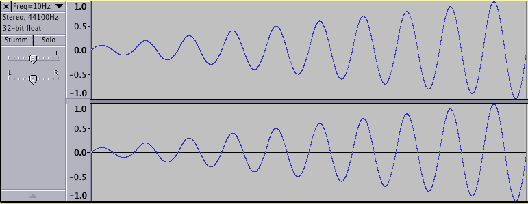
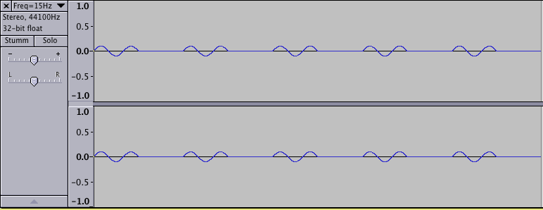

En Csound, hay varios tipos de variables. Es importante entender las diferencias entre estos tipos. Existen:
Excepto estos cuatro tipos estándar, hay otros dos tipos de variables que se utilizan para el procesamiento espectral:
Las variables f se usan para los opcodes de vocoder de fase de streaming (todos comienzan con los caracteres pvs), que son muy importantes para hacer FFT (Transformada Rápida de Fourier) en tiempo real. Se actualizan durante el ciclo-k, pero sus valores dependen también de los parámetros FFT como el frame size y el overlap.
Las variables w se usan en algunos opcodes de procesamiento espectral más antiguos.
El ejemplo siguiente ejemplifica todos los tipos de variables (excepto el tipo w):
EXAMPLE 03B01_Variable_types.csd
<CsoundSynthesizer>
<CsOptions>
-o dac
</CsOptions>
<CsInstruments>
;Example by Joachim Heintz
sr = 44100
ksmps = 32
0dbfs = 1
nchnls = 2
seed 0; random seed each time different
instr 1; i-time variables
iVar1 = p2; second parameter in the score
iVar2 random 0, 10; random value between 0 and 10
iVar = iVar1 + iVar2; do any math at i-rate
print iVar1, iVar2, iVar
endin
instr 2; k-time variables
kVar1 line 0, p3, 10; moves from 0 to 10 in p3
kVar2 random 0, 10; new random value each control-cycle
kVar = kVar1 + kVar2; do any math at k-rate
; --- print each 0.1 seconds
printks "kVar1 = %.3f, kVar2 = %.3f, kVar = %.3f%n", 0.1, kVar1, kVar2, kVar
endin
instr 3; a-variables
aVar1 oscils .2, 400, 0; first audio signal: sine
aVar2 rand 1; second audio signal: noise
aVar3 butbp aVar2, 1200, 12; third audio signal: noise filtered
aVar = aVar1 + aVar3; audio variables can also be added
outs aVar, aVar; write to sound card
endin
instr 4; S-variables
iMyVar random 0, 10; one random value per note
kMyVar random 0, 10; one random value per each control-cycle
;S-variable updated just at init-time
SMyVar1 sprintf "This string is updated just at init-time:
kMyVar = %d\n", iMyVar
printf_i "%s", 1, SMyVar1
;S-variable updates at each control-cycle
printks "This string is updated at k-time:
kMyVar = %.3f\n", .1, kMyVar
endin
instr 5; f-variables
aSig rand .2; audio signal (noise)
; f-signal by FFT-analyzing the audio-signal
fSig1 pvsanal aSig, 1024, 256, 1024, 1
; second f-signal (spectral bandpass filter)
fSig2 pvsbandp fSig1, 350, 400, 400, 450
aOut pvsynth fSig2; change back to audio signal
outs aOut*20, aOut*20
endin
</CsInstruments>
<CsScore>
; p1 p2 p3
i 1 0 0.1
i 1 0.1 0.1
i 2 1 1
i 3 2 1
i 4 3 1
i 5 4 1
</CsScore>
</CsoundSynthesizer>
Puede pensar en las variables como conectores con nombres entre opcodes. Puede conectar la salida de un opcode a la entrada de otro. El tipo de conector (audio, control, etc.) está determinado por la primera letra de su nombre.
Para una discusión más detallada, vea el artículo An overview Of Csound Variable Types por Andrés Cabrera en el Csound Journal, y el sitio sobre Types, Constants and Variables en el Canonical Csound Manual.
El ámbito de estas variables suele ser el instrumento en el que se definen. Son variables locales. En el siguiente ejemplo, las variables en el instrumento 1 y en el instrumento 2 tienen los mismos nombres, pero diferentes valores.
EXAMPLE 03B02_Local_scope.csd
<CsoundSynthesizer>
<CsOptions>
-odac
</CsOptions>
<CsInstruments>
;Example by Joachim Heintz
sr = 44100
ksmps = 4410; very high because of printing
nchnls = 2
0dbfs = 1
instr 1
;i-variable
iMyVar init 0
iMyVar = iMyVar + 1
print iMyVar
;k-variable
kMyVar init 0
kMyVar = kMyVar + 1
printk 0, kMyVar
;a-variable
aMyVar oscils .2, 400, 0
outs aMyVar, aMyVar
;S-variable updated just at init-time
SMyVar1 sprintf "This string is updated just at init-time:
kMyVar = %d\n", i(kMyVar)
printf "%s", kMyVar, SMyVar1
;S-variable updated at each control-cycle
SMyVar2 sprintfk "This string is updated at k-time:
kMyVar = %d\n", kMyVar
printf "%s", kMyVar, SMyVar2
endin
instr 2
;i-variable
iMyVar init 100
iMyVar = iMyVar + 1
print iMyVar
;k-variable
kMyVar init 100
kMyVar = kMyVar + 1
printk 0, kMyVar
;a-variable
aMyVar oscils .3, 600, 0
outs aMyVar, aMyVar
;S-variable updated just at init-time
SMyVar1 sprintf "This string is updated just at init-time:
kMyVar = %d\n", i(kMyVar)
printf "%s", kMyVar, SMyVar1
;S-variable updated at each control-cycle
SMyVar2 sprintfk "This string is updated at k-time:
kMyVar = %d\n", kMyVar
printf "%s", kMyVar, SMyVar2
endin
</CsInstruments>
<CsScore>
i 1 0 .3
i 2 1 .3
</CsScore>
</CsoundSynthesizer>
Esta es la salida a consola (primero la salida durante el ciclo-i por el opcode print, luego en cada ciclo-k la salida de printk y de ambos opcodes printf):
new alloc for instr 1:
instr 1: iMyVar = 1.000
i 1 time 0.10000: 1.00000
This string is updated just at init-time: kMyVar = 0
This string is updated at k-time: kMyVar = 1
i 1 time 0.20000: 2.00000
This string is updated just at init-time: kMyVar = 0
This string is updated at k-time: kMyVar = 2
i 1 time 0.30000: 3.00000
This string is updated just at init-time: kMyVar = 0
This string is updated at k-time: kMyVar = 3
B 0.000 .. 1.000 T 1.000 TT 1.000 M: 0.20000 0.20000
new alloc for instr 2:
instr 2: iMyVar = 101.000
i 2 time 1.10000: 101.00000
This string is updated just at init-time: kMyVar = 100
This string is updated at k-time: kMyVar = 101
i 2 time 1.20000: 102.00000
This string is updated just at init-time: kMyVar = 100
This string is updated at k-time: kMyVar = 102
i 2 time 1.30000: 103.00000
This string is updated just at init-time: kMyVar = 100
This string is updated at k-time: kMyVar = 103
B 1.000 .. 1.300 T 1.300 TT 1.300 M: 0.29998 0.29998
Si necesita variables que se reconozcan más allá del ámbito de un instrumento, debe definirlas como globales. Esto se hace prefijando el caracter g antes de los tipos i, k, a o S. Vea el siguiente ejemplo:
EXAMPLE 03B03_Global_scope.csd
<CsoundSynthesizer>
<CsInstruments>
;Example by Joachim Heintz
sr = 44100
ksmps = 4410; very high because of printing
nchnls = 2
0dbfs = 1
;global scalar variables should be inititalized in the header
giMyVar init 0
gkMyVar init 0
instr 1
;global i-variable
giMyVar = giMyVar + 1
print giMyVar
;global k-variable
gkMyVar = gkMyVar + 1
printk 0, gkMyVar
;global S-variable updated just at init-time
gSMyVar1 sprintf "This string is updated just at init-time:
gkMyVar = %d\n", i(gkMyVar)
printf "%s", gkMyVar, gSMyVar1
;global S-variable updated at each control-cycle
gSMyVar2 sprintfk "This string is updated at k-time:
gkMyVar = %d\n", gkMyVar
printf "%s", gkMyVar, gSMyVar2
endin
instr 2
;global i-variable, gets value from instr 1
giMyVar = giMyVar + 1
print giMyVar
;global k-variable, gets value from instr 1
gkMyVar = gkMyVar + 1
printk 0, gkMyVar
;global S-variable updated just at init-time, gets value from instr 1
printf "Instr 1 tells: '%s'\n", gkMyVar, gSMyVar1
;global S-variable updated at each control-cycle, gets value from instr 1
printf "Instr 1 tells: '%s'\n\n", gkMyVar, gSMyVar2
endin
</CsInstruments>
<CsScore>
i 1 0 .3
i 2 0 .3
</CsScore>
</CsoundSynthesizer>
La salida a consola muestra el ámbito global, ya que el instrumento 2 utiliza los valores que han sido cambiados por el instrumento 1 en el mismo ciclo de control: new alloc for instr 1:
instr 1: giMyVar = 1.000
new alloc for instr 2:
instr 2: giMyVar = 2.000
i 1 time 0.10000: 1.00000
This string is updated just at init-time: gkMyVar = 0
This string is updated at k-time: gkMyVar = 1
i 2 time 0.10000: 2.00000
Instr 1 tells: 'This string is updated just at init-time: gkMyVar = 0'
Instr 1 tells: 'This string is updated at k-time: gkMyVar = 1'
i 1 time 0.20000: 3.00000
This string is updated just at init-time: gkMyVar = 0
This string is updated at k-time: gkMyVar = 3
i 2 time 0.20000: 4.00000
Instr 1 tells: 'This string is updated just at init-time: gkMyVar = 0'
Instr 1 tells: 'This string is updated at k-time: gkMyVar = 3'
i 1 time 0.30000: 5.00000
This string is updated just at init-time: gkMyVar = 0
This string is updated at k-time: gkMyVar = 5
i 2 time 0.30000: 6.00000
Instr 1 tells: 'This string is updated just at init-time: gkMyVar = 0'
Instr 1 tells: 'This string is updated at k-time: gkMyVar = 5'
Se deben tomar algunas consideraciones especiales si se trabaja con variables globales de audio. En realidad, Csound se comporta básicamente igual si se trabaja con una variable de audio local o global. Pero normalmente se trabaja con variables de audio globales cuando se desea añadir varias señales de audio a una señal global, y eso implica una diferencia.
Los siguientes ejemplos van a ser un poco más detallados. Si sólo desea ver el resultado (= el audio global normalmente debe "limpiarse"), puede omitir los siguientes ejemplos y pasar al último de esta sección.
Debe entenderse primero que una variable de audio global es tratada igual por Csound si se usa como una señal de audio local:
EXAMPLE 03B04_Global_audio_intro.csd
<CsoundSynthesizer>
<CsOptions>
-odac
</CsOptions>
<CsInstruments>
;Example by Joachim Heintz
sr = 44100
ksmps = 32
nchnls = 2
0dbfs = 1
instr 1; produces a 400 Hz sine
gaSig oscils .1, 400, 0
endin
instr 2; outputs gaSig
outs gaSig, gaSig
endin
</CsInstruments>
<CsScore>
i 1 0 3
i 2 0 3
</CsScore>
</CsoundSynthesizer>
Por supuesto que no es necesario utilizar una variable global en este caso. Si lo hace, se arriesga a que el audio sea sobrescrito por un instrumento con un número más alto usando el mismo nombre de variable. En el ejemplo siguiente, sólo oirá un tono senoidal de 600 Hz, ya que la sinusoide de 400 Hz del instrumento 1 es sobrescrito por la sinusoide de 600 Hz del instrumento 2:
EXAMPLE 03B05_Global_audio_overwritten.csd
<CsoundSynthesizer>
<CsOptions>
-o dac
</CsOptions>
<CsInstruments>
;Example by Joachim Heintz
sr = 44100
ksmps = 32
nchnls = 2
0dbfs = 1
instr 1; produces a 400 Hz sine
gaSig oscils .1, 400, 0
endin
instr 2; overwrites gaSig with 600 Hz sine
gaSig oscils .1, 600, 0
endin
instr 3; outputs gaSig
outs gaSig, gaSig
endin
</CsInstruments>
<CsScore>
i 1 0 3
i 2 0 3
i 3 0 3
</CsScore>
</CsoundSynthesizer>
En general, se utilizará una variable de audio global como un bus al que se le puede añadir una señal de audio local. Es esta adición de una señal de audio global a su mismo estado anterior la que puede causar un cierto apuro. Primero veamos un simple ejemplo de una señal de control para entender lo que está sucediendo:
EXAMPLE 03B06_Global_audio_added.csd
<CsoundSynthesizer>
<CsInstruments>
;Example by Joachim Heintz
sr = 44100
ksmps = 4410; very high because of printing
nchnls = 2
0dbfs = 1
instr 1
kSum init 0; sum is zero at init pass
kAdd = 1; control signal to add
kSum = kSum + kAdd; new sum in each k-cycle
printk 0, kSum; print the sum
endin
</CsInstruments>
<CsScore>
i 1 0 1
</CsScore>
</CsoundSynthesizer>
En este caso, el "bus de suma" kSum se incrementa durante cada ciclo de control en 1, ya que se le añade la señal kAdd (que siempre es igual a 1) a su estado anterior durante cada ciclo-k. No es diferente si esto es hecho por una señal-k local, como aquí, o por una señal-k global, como en el siguiente ejemplo:
EXAMPLE 03B07_Global_control_added.csd
<CsoundSynthesizer>
<CsInstruments>
;Example by Joachim Heintz
sr = 44100
ksmps = 4410; very high because of printing
nchnls = 2
0dbfs = 1
gkSum init 0; sum is zero at init
instr 1
gkAdd = 1; control signal to add
endin
instr 2
gkSum = gkSum + gkAdd; new sum in each k-cycle
printk 0, gkSum; print the sum
endin
</CsInstruments>
<CsScore>
i 1 0 1
i 2 0 1
</CsScore>
</CsoundSynthesizer>
¿Qué pasa cuando se trabaja con señales de audio en lugar de señales de control de esta manera, añadiendo repetidamente una señal a su estado anterior? Las señales de audio en Csound son una colección de números (un vector). El tamaño de este vector está dado por las constante ksmps. Si la frecuencia de muestreo es de 44100, y ksmps = 100, se calculará 441 veces por segundo un vector que consta de 100 números, a su vez cada uno representando el valor de la amplitud para cada muestra.
Por lo tanto, si agrega una señal de audio a su estado anterior, pueden suceder cosas diferentes, dependiendo de los vectores presentes y de los estados anteriores. Si los estados anterior y actual (con ksmps = 9) son [0 0.1 0.2 0.1 0 -0.1 -0.2 -0.1 0] obtendrá una señal que es dos veces más intensa: [0 0.2 0.4 0.2 0 -0.2 -0.4 -0.2 0]. Pero si el estado actual es opuesto [0 -0.1 -0.2 -0.1 0 0.1 0.2 0.1 0], sólo obtendrá ceros cuando realice la adición. Esto se muestra en el siguiente ejemplo con una variable de audio local y, a continuación, en el ejemplo a continuación con una variable de audio global.
EXAMPLE 03B08_Local_audio_add.csd
<CsoundSynthesizer>
<CsOptions>
-o dac
</CsOptions>
<CsInstruments>
;Example by Joachim Heintz
sr = 44100
ksmps = 4410; very high because of printing
;(change to 441 to see the difference)
nchnls = 2
0dbfs = 1
instr 1
;initialize a general audio variable
aSum init 0
;produce a sine signal (change frequency to 401 to see the difference)
aAdd oscils .1, 400, 0
;add it to the general audio (= the previous vector)
aSum = aSum + aAdd
kmax max_k aSum, 1, 1; calculate maximum
printk 0, kmax; print it out
outs aSum, aSum
endin
</CsInstruments>
<CsScore>
i 1 0 1
</CsScore>
</CsoundSynthesizer>
prints:
i 1 time 0.10000: 0.10000
i 1 time 0.20000: 0.20000
i 1 time 0.30000: 0.30000
i 1 time 0.40000: 0.40000
i 1 time 0.50000: 0.50000
i 1 time 0.60000: 0.60000
i 1 time 0.70000: 0.70000
i 1 time 0.80000: 0.79999
i 1 time 0.90000: 0.89999
i 1 time 1.00000: 0.99999
EXAMPLE 03B09_Global_audio_add.csd
<CsoundSynthesizer>
<CsOptions>
-o dac
</CsOptions>
<CsInstruments>
;Example by Joachim Heintz
sr = 44100
ksmps = 4410; very high because of printing
;(change to 441 to see the difference)
nchnls = 2
0dbfs = 1
;initialize a general audio variable
gaSum init 0
instr 1
;produce a sine signal (change frequency to 401 to see the difference)
aAdd oscils .1, 400, 0
;add it to the general audio (= the previous vector)
gaSum = gaSum + aAdd
endin
instr 2
kmax max_k gaSum, 1, 1; calculate maximum
printk 0, kmax; print it out
outs gaSum, gaSum
endin
</CsInstruments>
<CsScore>
i 1 0 1
i 2 0 1
</CsScore>
</CsoundSynthesizer>
En ambos casos, se obtiene una señal que aumenta cada 1/10 de segundo, ya que se tienen 10 ciclos de control por segundo (ksmps = 4410), y la frecuencia de 400 Hz se puede dividir por igual. Si cambia el valor de ksmps a 441, obtendrá una señal que aumenta mucho más rápido y está fuera de rango después de 1/10 segundos. Si cambia la frecuencia a 401 Hz, obtendrá una señal que aumenta primero, y luego disminuye, ya que cada vector de audio tiene 40.1 ciclos de onda senoidal. De este modo las fases están cambiando; primero haciéndose más intensas y luego más débiles. Si cambia la frecuencia a 10 Hz, y luego a 15 Hz (con ksmps = 44100), no podrá oír nada, pero si renderiza a un archivo, podrá observar todo el proceso de refuerzo como de borrado de manera muy evidente:

Señal de audio global de auto-refuerzo debido a su estado en un ciclo de control que es el mismo que en el anterior

Así que en resumen: Si trabaja con variables de audio globales de tal manera que se agregan varias señales de audio locales a la variable de audio global (es decir, que funciona como un bus), debe limpiar este bus global durante cada ciclo de control. Como en Csound todos los instrumentos se calculan en orden ascendente, debe hacerse ya sea al principio del primero, o al final del último instrumento. Tal vez la mejor idea sea declarar todas las variables de audio globales en el encabezado de la orquesta primero y luego borrarlas en un instrumento "siempre encendido" con el mayor número respecto a todos los instrumentos utilizados. Este es un ejemplo de una situación típica:
EXAMPLE 03B10_Global_with_clear.csd
<CsoundSynthesizer>
<CsOptions>
-o dac
</CsOptions>
<CsInstruments>
;Example by Joachim Heintz
sr = 44100
ksmps = 32
nchnls = 2
0dbfs = 1
;initialize the global audio variables
gaBusL init 0
gaBusR init 0
;make the seed for random values each time different
seed 0
instr 1; produces short signals
loop:
iDur random .3, 1.5
timout 0, iDur, makenote
reinit loop
makenote:
iFreq random 300, 1000
iVol random -12, -3; dB
iPan random 0, 1; random panning for each signal
aSin oscil3 ampdb(iVol), iFreq, 1
aEnv transeg 1, iDur, -10, 0; env in a-rate is cleaner
aAdd = aSin * aEnv
aL, aR pan2 aAdd, iPan
gaBusL = gaBusL + aL; add to the global audio signals
gaBusR = gaBusR + aR
endin
instr 2; produces short filtered noise signals (4 partials)
loop:
iDur random .1, .7
timout 0, iDur, makenote
reinit loop
makenote:
iFreq random 100, 500
iVol random -24, -12; dB
iPan random 0, 1
aNois rand ampdb(iVol)
aFilt reson aNois, iFreq, iFreq/10
aRes balance aFilt, aNois
aEnv transeg 1, iDur, -10, 0
aAdd = aRes * aEnv
aL, aR pan2 aAdd, iPan
gaBusL = gaBusL + aL; add to the global audio signals
gaBusR = gaBusR + aR
endin
instr 3; reverb of gaBus and output
aL, aR freeverb gaBusL, gaBusR, .8, .5
outs aL, aR
endin
instr 100; clear global audios at the end
clear gaBusL, gaBusR
endin
</CsInstruments>
<CsScore>
f 1 0 1024 10 1 .5 .3 .1
i 1 0 20
i 2 0 20
i 3 0 20
i 100 0 20
</CsScore>
</CsoundSynthesizer>
En lugar de utilizar las variables-g tradicionales para los valores o señales que se van a transferir entre varios instrumentos, también es posible utilizar los opcodes chn. Un Valor-i, -k, -a o -S, o una señal pueden ser establecidas por chnset y recibida por chnget. Una ventaja de este enfoque es tener cadenas de texto como nombres, de modo que pueda elegir nombres intuitivos.
Para las variables de audio, en lugar de realizar una adición, puede utilizar el opcode chnmix. Para "limpiar" una variable de audio, se puede usar el opcode chnclear.
EXAMPLE 03B11_Chn_demo.csd
<CsoundSynthesizer>
<CsOptions>
-o dac
</CsOptions>
<CsInstruments>
;Example by Joachim Heintz
sr = 44100
ksmps = 32
nchnls = 2
0dbfs = 1
instr 1; send i-values
chnset 1, "sio"
chnset -1, "non"
endin
instr 2; send k-values
kfreq randomi 100, 300, 1
chnset kfreq, "cntrfreq"
kbw = kfreq/10
chnset kbw, "bandw"
endin
instr 3; send a-values
anois rand .1
chnset anois, "noise"
loop:
idur random .3, 1.5
timout 0, idur, do
reinit loop
do:
ifreq random 400, 1200
iamp random .1, .3
asig oscils iamp, ifreq, 0
aenv transeg 1, idur, -10, 0
asine = asig * aenv
chnset asine, "sine"
endin
instr 11; receive some chn values and send again
ival1 chnget "sio"
ival2 chnget "non"
print ival1, ival2
kcntfreq chnget "cntrfreq"
kbandw chnget "bandw"
anoise chnget "noise"
afilt reson anoise, kcntfreq, kbandw
afilt balance afilt, anoise
chnset afilt, "filtered"
endin
instr 12; mix the two audio signals
amix1 chnget "sine"
amix2 chnget "filtered"
chnmix amix1, "mix"
chnmix amix2, "mix"
endin
instr 20; receive and reverb
amix chnget "mix"
aL, aR freeverb amix, amix, .8, .5
outs aL, aR
endin
instr 100; clear
chnclear "mix"
endin
</CsInstruments>
<CsScore>
i 1 0 20
i 2 0 20
i 3 0 20
i 11 0 20
i 12 0 20
i 20 0 20
i 100 0 20
</CsScore>
</CsoundSynthesizer>
There has been error in communication with Booktype server. Not sure right now where is the problem.
You should refresh this page.